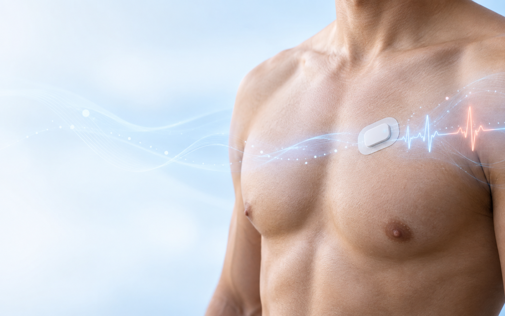

Wearable ECG patch
A compact, lightweight sensing device designed for comfortable, extended ECG acquisition.
- 24-bit signal acquisition architecture
- Low-power Bluetooth connectivity
- Long-term monitoring focus
iSoma combines a lightweight wearable ECG patch, connected mobile experience and AI-assisted analysis to advance accessible, long-term cardiac monitoring.

Developed through research in wearable sensing, wireless systems and digital health
The iSoma platform
Designed as an integrated ecosystem—not a standalone sensor—iSoma connects physiological measurement, secure data transfer and review-ready analysis.
A compact, lightweight sensing device designed for comfortable, extended ECG acquisition.
Mobile applications support device connection, signal viewing and secure data transfer.
Signal-processing and deep-learning methods help organise long-duration ECG data for efficient review.
Connected experience
Select each stage to explore how iSoma connects wearable sensing with AI-assisted review.
The patch is designed to make extended ECG collection less intrusive during normal daily routines.
Designed around unmet needs
iSoma research focuses on the practical limitations that can make extended cardiac monitoring costly, uncomfortable or difficult to interpret.
A small-form-factor approach intended to reduce the burden of extended wear.
A pathway linking the patch, mobile applications, cloud services and authorised reviewers.
AI-assisted methods intended to help prioritise long ECG recordings for expert review.
Development informed by clinician feedback, validation needs, privacy and regulatory planning.
Research foundation
iSoma brings together years of work in wearable ECG acquisition, ambulatory signal classification and connected health systems.
View a foundational publication ↗Development pathway
The next phase centres on pilot manufacture, prospective evaluation, embedded intelligence and regulatory-quality evidence.
Wearable sensing, mobile applications and cloud-based analysis demonstrated as connected components.
Produce trial units and evaluate usability, signal quality and system performance with clinical collaborators.
Assess arrhythmia-classification performance against predefined protocols and expert reference standards.
Develop quality, safety, cybersecurity and commercialisation evidence for the intended use.
Performance thresholds described in project plans are development targets, not validated clinical claims. Public claims will be updated only after appropriate evaluation.
Clinical, research & industry collaboration
We welcome conversations with health services, clinicians, researchers, manufacturers and investors interested in responsible cardiac-monitoring innovation.
Associate Professor Zihuai Lin
School of Electrical and Computer Engineering
The University of Sydney